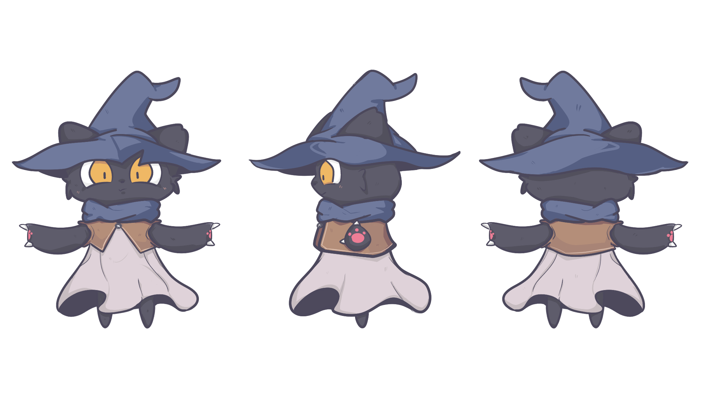
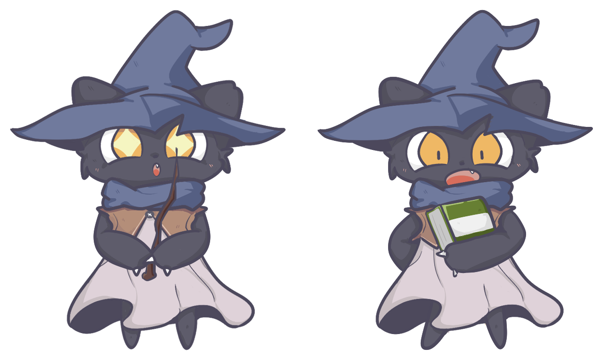
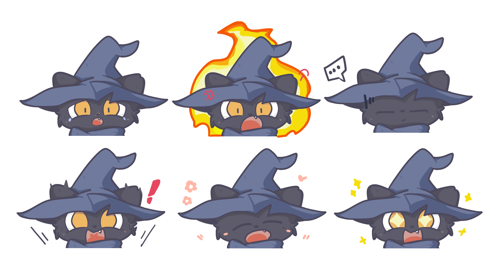

Planning for 3D Character & Environment Creation — Assignment 1
Kuro is a small, magical black cat who prefers peace and quiet, choosing to live far from the city, deep in a magical forest. Curious and adventurous, Kuro spends its days exploring and researching within the forest, and calls a small cabin home.

Create an avatar representing myself and the world I live in — kept simple and readable rather than realistic, since this was an introductory course, with real thought given to how the character and its objects would move.
The setting is a small cabin tucked inside a magical forest — quiet, a little overgrown, and just the right size for one small witch and their books.
A magical little black cat who prefers peace and stays shy around others, so it lives far from the city, deep in the forest, where it can freely explore and research to its heart's content.

